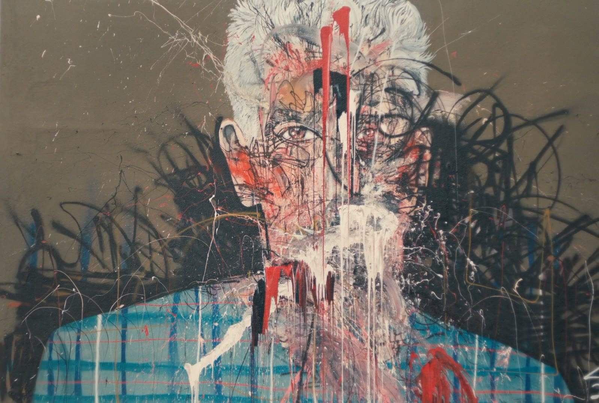

アンクル・トニー

The man who ate the whole world and kept going.
アンクル・トニー is a personal field guide to anime, film, music, manga, books, and all the art that makes sense of a life lived from the inside.
preface
序文alijah jacob · 2026I've never trusted other people's taste to tell me what I should feel.
Not because I think I'm above it. But because the things that have actually moved me — the anime that stopped me cold, the films I've watched alone at 2am, the albums I've returned to without meaning to — none of them arrived through an algorithm. They arrived through something quieter. A pull I couldn't always name. An image that stayed with me for days. A line of dialogue I needed to rewind.
This is my attempt to map that pull. To understand not just what I love but why — what it says about how I see, what I'm looking for, what I'm still trying to work out. Every entry in this archive is a coordinate. Uncle Tony is the guide who reads the map.
I built this for myself. But if you're here, maybe something in it speaks to you too. Maybe you also know the feeling of sitting alone with something that got all the way in — and not having the words for it yet.
This is my attempt at the words.
— Alijah JacobNot an algorithm アルゴリズムではない
Every recommendation platform is built on aggregation — what most people liked, averaged and offered back to you. Uncle Tony doesn't know what other people think. He knows me. My history, my wound, my frequency, my central subject. He was built from months of psychological taste interviews, playlist deep dives, and honest personal excavation.
A thinking partner 思考のパートナー
He speaks like Anthony Bourdain — direct, literary, darkly funny, never precious. He moves through four layers with every recommendation: surface, aesthetic, theme, philosophy. Then he gives you the line — the specific moment that is your entry point. He asks what happened to you today before he asks what you want to watch.
A living document 生きている記録
Uncle Tony covers anime, film, music, manga, books, and gacha. He updates as I grow. The soul of this page — a thinking partner for a life lived inside art, making sense of it from the inside — doesn't change. The technology is just the vessel. The vessel is replaceable. The map is permanent.
talk to tony
案内人anime · film · music · manga · books · gachaNot a recommendation engine. Not a critic. Not a database with a personality. A guide who has read the full map of what you built in silence, and can take you somewhere you didn't know you needed to go.
enter to send · shift + enter for a new line